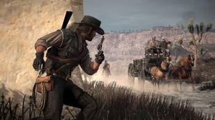

Red Dead Redemption 2
 Game Party Chief Game Analyst - Tarik ShoukryAmerica, 1899. The end of the wild west era has begun as lawmen hunt down the last remaining outlaw gangs. Those who will not surrender or succumb are killed. After a robbery goes badly wrong in the western town of Blackwater, Arthur Morgan and the Van der Linde Gang are forced to flee. With federal agents and the best bounty hunters in the nation massing on their heels, the gang must rob, steal and fight their way across the rugged heartland of America in order to survive. As deepening internal divisions threaten to tear the gang apart, Arthur must make a choice between his own ideals and loyalty to the gang who raised him.